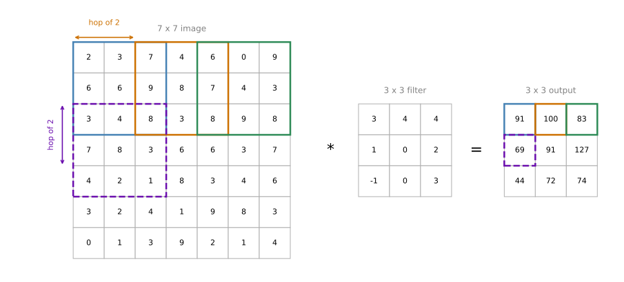
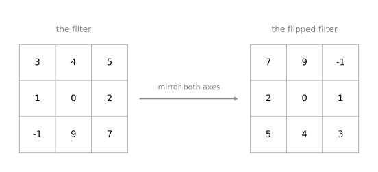
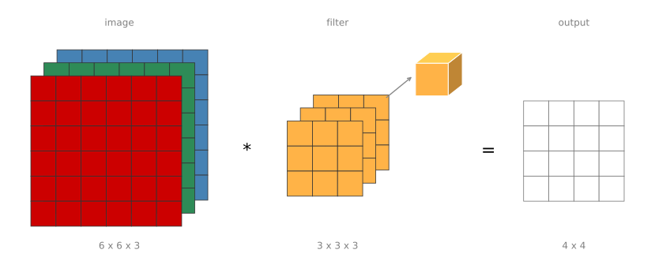
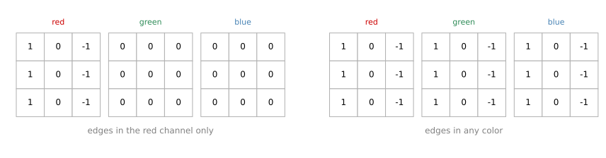
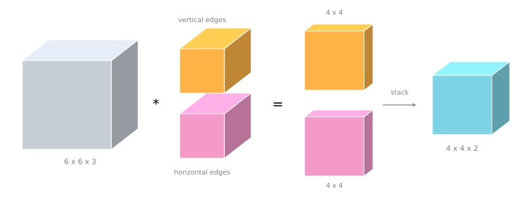

Strided Convolutions and Convolutions Over Volume
deep-learning
convolutional-neural-networks
computer-vision
convolution
stride
How a stride changes the output size of a convolution, why deep learning skips the filter flip, and how filters extend to RGB volumes and to many filters at once.
Strided convolutions are another piece of the basic building block of convolutions as used in convolutional neural networks. Together with padding, the stride is one of the two numbers that decide how big the output of a convolution is. After that, this page moves from convolutions over flat matrices to convolutions over volumes, which is what makes the operation powerful enough to work on real color images.
Strided Convolutions
Suppose you want to convolve a 7 by 7 image with a 3 by 3 filter, except that instead of doing it the usual way, you do it with a stride of 2.
What that means is that you take the element-wise product as usual in the upper left 3 by 3 region, then multiply and add, and that gives 91. But then, instead of stepping the window over by one step, you step it over by two steps. The window hops over two positions, skipping one position on the way. Then you do the usual element-wise product and summing, which gives 100. Do that once more, hopping over another two steps, and you get 83.
When you go to the next row, you again take two steps instead of one step, so the window moves down two rows rather than one. That gives 69, then 91, then 127. For the final row you get 44, 72, and 74.
Each colored box on the left is one position of the window, and the box of the same color on the right is the output cell it produces. The blue and orange boxes show the horizontal hop of two, and the purple dashed box shows the same hop applied downward when the window moves to the next row.
In this example a 7 by 7 matrix convolved with a 3 by 3 matrix gives a 3 by 3 output.
Output Dimension Formula
The input and output dimensions turn out to be governed by a single formula. If you have an \(n \times n\) image convolved with an \(f \times f\) filter, using padding \(p\) and stride \(s\), then the output is
\[ \left\lfloor \frac{n + 2p - f}{s} + 1 \right\rfloor \times \left\lfloor \frac{n + 2p - f}{s} + 1 \right\rfloor \]
The numerator \(n + 2p - f\) is the same quantity as before. What is new is that you divide it by \(s\), because you are stepping \(s\) steps at a time rather than one step at a time.
In this example \(n = 7\), \(f = 3\), \(p = 0\), and \(s = 2\), so
\[ \frac{7 + 0 - 3}{2} + 1 = \frac{4}{2} + 1 = 3 \]
which is why you wind up with a 3 by 3 output.
Rounding Down
One last detail is what happens when that fraction is not an integer. In that case you round down. The notation \(\lfloor z \rfloor\) is called the floor of \(z\), and it means taking \(z\) and rounding down to the nearest integer.
The reason for rounding down comes from how the operation is implemented. You take the window multiplication only if the window is fully contained inside the image, or inside the image plus the padding. If any part of the window hangs outside, you simply do not do that computation. That convention, that the filter must lie entirely within the image or the padded image before a corresponding output value is generated, is what makes rounding down the right thing to do when \((n + 2p - f)/s\) is not an integer.
Summary of Dimensions
To summarize, if you have an \(n \times n\) image convolved with an \(f \times f\) filter, with padding \(p\) and stride \(s\), then the output has dimension
\[ \left\lfloor \frac{n + 2p - f}{s} + 1 \right\rfloor \times \left\lfloor \frac{n + 2p - f}{s} + 1 \right\rfloor \]
It is nice when you can choose all of these numbers so that the fraction works out to an integer, although you do not have to do that, and rounding down is just fine as well. It is worth working through a few values of \(n\), \(f\), \(p\), and \(s\) yourself to convince yourself that this formula gives the right output size.
Review Questions
1. What does a stride of 2 change compared with the default convolution?
TipAnswer
The window moves two positions at a time instead of one, both horizontally and vertically. It skips over intermediate positions, so the output is roughly half as tall and half as wide as it would be with a stride of 1.
1. You convolve a 63 by 63 image with a 7 by 7 filter, using a padding of 0 and a stride of 3. What is the output size?
TipAnswer
Plug into the formula.
\[ \left\lfloor \frac{63 + 0 - 7}{3} + 1 \right\rfloor = \left\lfloor \frac{56}{3} + 1 \right\rfloor = \lfloor 18.67 + 1 \rfloor = 19 \]
So the output is 19 by 19.
1. Why does the formula round down rather than up?
TipAnswer
Because a window position only counts when the filter fits entirely inside the image or inside the padded image. A position where part of the filter hangs off the edge produces no output value, so the count of valid positions is the rounded-down value.
1. A convolution has \(n = 10\), \(f = 3\), \(p = 1\), and \(s = 2\). What is the output size?
TipAnswer
\[ \left\lfloor \frac{10 + 2 - 3}{2} + 1 \right\rfloor = \left\lfloor 4.5 + 1 \right\rfloor = 5 \]
The output is 5 by 5.
Cross-Correlation and Convolution
Before moving on, there is a technical comment worth making about cross-correlation versus convolution. It will not affect anything you have to do to implement convolutional neural networks, but depending on which math textbook or signal processing textbook you read, there is one more possible inconsistency in the notation.
If you look at a typical math textbook, the way convolution is defined, there is an extra step before the element-wise product and summing. To convolve a matrix with a filter, you first take the filter and flip it on the horizontal as well as the vertical axis.

The 3 that was in the upper left ends up in the lower right, the 7 that was in the lower right ends up in the upper left, and so on for every entry. It is the filter mirrored on both the vertical and the horizontal axis. In the textbook definition it is this flipped matrix that you then slide over the image, and the element-wise products are formed against it.
The way the convolution operation has been defined on these pages skips the mirroring step. Technically, the operation used here is what is sometimes called cross-correlation rather than convolution. In the deep learning literature, by convention, everyone just calls it the convolution operation.
To summarize, by convention in machine learning we do not bother with the flipping operation. Technically the operation is maybe better called cross-correlation, but most of the deep learning literature calls it the convolution operator, and that is the convention used here as well. If you read a lot of the machine learning literature, you will find that most people call this the convolution operator without bothering with the flips.
It turns out that in signal processing, and in certain branches of mathematics, doing the flip in the definition of convolution gives the operator this property.
\[ (A * B) * C = A * (B * C) \]
This is called associativity, and it is nice for some signal processing applications. But for deep neural networks it really does not matter, so omitting the double mirroring just simplifies the code and the neural network works just as well. This should not affect anything you implement, and it should not affect your ability to read and understand the deep learning literature.
Review Questions
1. What is the one extra step in the mathematical definition of convolution that deep learning skips?
TipAnswer
Flipping the filter on both the horizontal and the vertical axis before taking the element-wise product and summing. Skipping it means the operation is technically cross-correlation, but the deep learning literature still calls it convolution.
1. Does skipping the flip hurt the neural network?
TipAnswer
No. The filter entries are learned, so whatever pattern the network needs, it can learn directly in the unflipped orientation. The flip only matters for the associativity property that some signal processing applications rely on.
Convolutions Over Volume
So far every convolution here has been over a flat matrix, such as a 6 by 6 matrix. Now let us see how to convolve not just over 2D images, but over three dimensional volumes.
Suppose you want to detect features not in a grayscale image, but in an RGB image. Instead of a 6 by 6 image, it is now 6 by 6 by 3, where the 3 corresponds to the three color channels. You can think of this as a stack of three 6 by 6 images, one for red, one for green, and one for blue.
In order to detect edges or some other feature in this image, you convolve it not with a 3 by 3 filter as before, but with a 3D filter that is 3 by 3 by 3. The filter itself also has three layers, corresponding to the red, green, and blue channels.
To give these things names, the first 6 is the height of the image, the second 6 is the width, and the 3 is the number of channels. The filter similarly has a height, a width, and a number of channels. The number of channels in your image must match the number of channels in your filter, so those two numbers have to be equal.
The output of this convolution is a 4 by 4 image. Notice that it is 4 by 4 by 1. There is no longer a 3 at the end.

The image is drawn as its three channel matrices stacked one behind the other, red in front, then green, then blue, and the filter is drawn the same way. Stacks of matrices get cluttered quickly, so from here on the filter is drawn as the single three dimensional cube shown beside it.
Computing the Output
To compute the output, you take the 3 by 3 by 3 filter and first place it in the upper left most position. That filter has 27 numbers in it, which is 3 cubed, so 27 parameters.
What you do is take each of those 27 numbers and multiply them with the corresponding numbers from the red, green, and blue channels of the image. Take the first nine numbers from the red channel, then the nine beneath them from the green channel, then the nine beneath those from the blue channel, and multiply each with the corresponding one of the 27 numbers covered by the cube. Then add up all those numbers, and that gives you the first number in the output.
To compute the next output, you take the cube and slide it over by one. Again you do 27 multiplications, add up the 27 numbers, and that gives the next output. Do it for the next position over, and the next, and so on down each row, until at the very end you reach the position that gives the final output value.
Choosing What the Filter Detects
Here is what this lets you do. Suppose you want to detect edges in the red channel of the image only. Then the first layer of the filter could be the usual vertical edge detector, with 1, 1, 1 in the first column, 0, 0, 0 in the middle, and -1, -1, -1 in the last column, while the green layer is all zeros and the blue layer is all zeros. Stacking those three together forms a 3 by 3 by 3 filter that detects vertical edges, but only in the red channel.
Alternatively, if you do not care what color the vertical edge is, then you can use a filter that has 1, 1, 1 and -1, -1, -1 in all three channels. Setting the parameters that second way gives you a 3 by 3 by 3 edge detector that detects edges in any color.

With different choices of these parameters you get different feature detectors out of this one 3 by 3 by 3 filter. By convention in computer vision, when you have an input with a certain height, a certain width, and a certain number of channels, your filter has a possibly different height and a possibly different width, but the same number of channels.
In theory it is possible to have a filter that only looks at the red channel, or one that looks at only the green channel and the blue channel. And once again, notice that convolving a volume, a 6 by 6 by 3 convolved with a 3 by 3 by 3, gives a 4 by 4 output, which is 2D.
Review Questions
1. Why must the number of channels in the filter equal the number of channels in the input?
TipAnswer
Because every number in the filter is multiplied with a corresponding number in the input under it. If the filter had fewer or more channels than the input, some entries would have no partner to multiply with. A 3 by 3 by 3 filter covers 27 input values, one per filter entry.
1. A 6 by 6 by 3 image is convolved with a 3 by 3 by 3 filter, with no padding and a stride of 1. Why is the output 4 by 4 rather than 4 by 4 by 3?
TipAnswer
Because all 27 products are added into a single number for each window position. The channel dimension is summed away, so one filter produces one flat 2D output no matter how many channels the input has.
1. How would you build a filter that detects vertical edges only in the blue channel?
TipAnswer
Put the vertical edge detector, with the column of 1s and the column of -1s, in the blue layer of the filter, and set the red and green layers to all zeros. The zero layers contribute nothing to the sum, so only the blue channel affects the output.
Multiple Filters
Now that you know how to convolve over volumes, there is one last idea that is crucial for building convolutional neural networks. What if you do not just want to detect vertical edges? What if you want to detect vertical edges and horizontal edges, and maybe 45 degree edges and 70 degree edges as well? In other words, what if you want to use multiple filters at the same time?
Take the 6 by 6 by 3 image convolved with a 3 by 3 by 3 filter, which gives a 4 by 4 output, and say that filter is a vertical edge detector. Now add a second filter, drawn here in a different color, which could be a horizontal edge detector. Convolving with the first filter gives you one 4 by 4 output, and convolving with the second filter gives you a different 4 by 4 output.
What you do then is take these two 4 by 4 outputs, put the first one at the front and the second one behind it, and stack them together. You end up with a 4 by 4 by 2 output volume, where the 2 comes from the fact that you used two different filters.

Summary of Dimensions
To summarize the dimensions, if you have an \(n \times n \times n_c\) input image, where \(n_c\) is the number of channels, and you convolve it with an \(f \times f \times n_c\) filter, where by convention this \(n_c\) has to be the same number, then what you get is
\[ (n - f + 1) \times (n - f + 1) \times n_c' \]
where \(n_c'\) is the number of filters you used. It is really the number of channels of the next layer. In the example above this would be 4 by 4 by 2. This assumes a stride of 1 and no padding. If you use a different stride or padding, then the \(n - f + 1\) part changes in the usual way from the formula earlier on this page.
This idea of convolution over volumes turns out to be really powerful. Only a small part of it is that you can now operate directly on RGB images with three channels. Even more important is that you can now detect two features, such as vertical and horizontal edges, or ten features, or 128, or several hundred different features. The output then has a number of channels equal to the number of features you are detecting.
Note on Terminology
The last dimension has been called the number of channels here. In the literature people will also often call it the depth of the 3D volume, and both notations, channels or depth, are commonly used. Depth is a little more confusing, because you usually talk about the depth of the neural network as well, so these pages use the term channels to refer to the size of that third dimension.
Review Questions
1. You convolve a 6 by 6 by 3 image with ten 3 by 3 by 3 filters, using a stride of 1 and no padding. What is the shape of the output?
TipAnswer
Each filter gives a 4 by 4 output, since \(6 - 3 + 1 = 4\), and stacking the ten of them gives a 4 by 4 by 10 volume. The number of filters becomes the number of channels of the output.
1. What decides the number of channels in the output volume of a convolution?
TipAnswer
The number of filters used in that convolution. The number of channels of the input does not appear in the output shape at all, because each filter sums across all input channels.
1. What do the words channels and depth mean when describing a volume, and why is depth avoided here?
TipAnswer
They both refer to the size of the third dimension of a volume, such as the 3 in 6 by 6 by 3. Depth is avoided because it is easy to confuse with the depth of the neural network, meaning how many layers it has.
1. You have an input volume that is 127 by 127 by 16, and convolve it with 32 filters of 5 by 5, using a stride of 2 and no padding. What is the output volume?
\(62 \times 62 \times 16\)
\(62 \times 62 \times 32\)
\(123 \times 123 \times 16\)
\(123 \times 123 \times 32\)
TipAnswer
b. The height and width come from \(\lfloor (127 + 0 - 5)/2 + 1 \rfloor = 61 + 1 = 62\), and the number of channels comes from the number of filters, which is 32. The 16 channels of the input do not survive into the output shape, because each filter sums across all of them. Options c and d are what you would get with a stride of 1.
Now that you know how to implement convolutions over volumes, you are ready to see how one layer of a convolutional neural network is built.